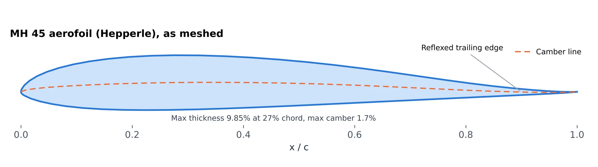
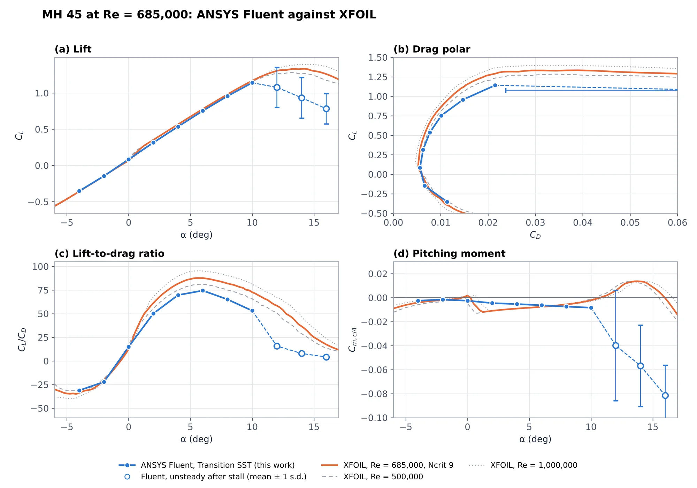
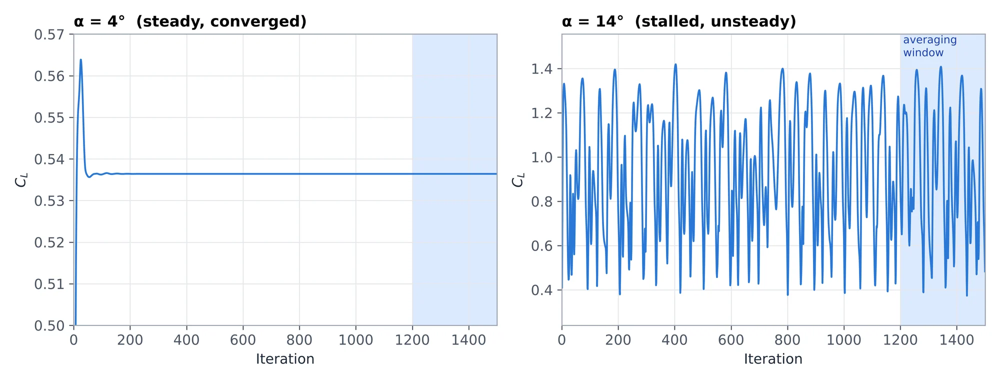
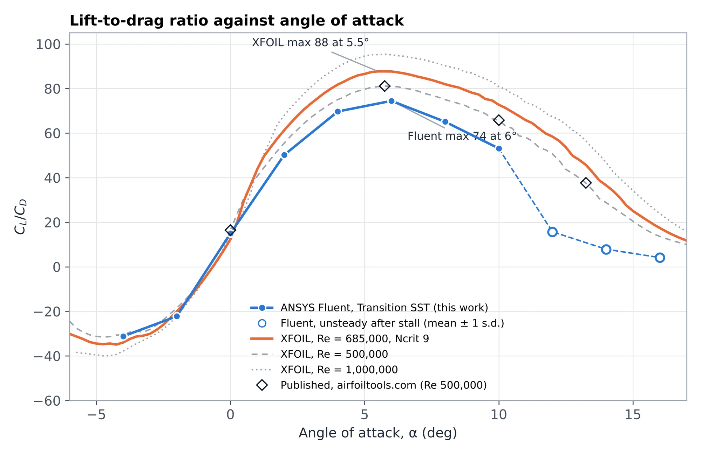
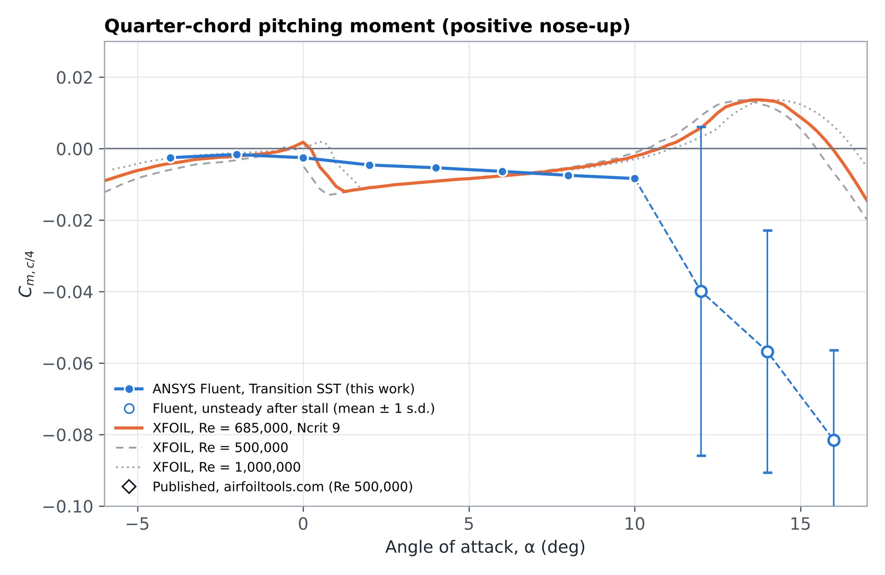

Work/03 of 05Completed
MH 45 Aerofoil CFD Sweep
A 2D Fluent sweep of the BWB's tip aerofoil, run in parallel on HPC and checked against published polars before any 3D work.
01 · Why this runPractise the workflow where the answer is known
Before running my 3D BWB cases I practised the full workflow on the MH 45, the reflexed tip aerofoil of my UAV. Eleven angles of attack ran in parallel on Strathclyde's HPC cluster, and the results were compared with published XFOIL data at the same Reynolds number.
Lift matched within about 5% through the linear range, and the comparison showed exactly where steady 2D RANS stops being reliable.
02 · SetupOne mesh, every angle

03 · Checking the referenceReproduce the published polar first
Airfoiltools.com publishes XFOIL polars for the MH 45 at Re 500,000 and 1,000,000 (Ncrit 9), but nothing at my Reynolds number. So I ran XFOIL with the same settings on my own coordinates and checked it against the published 500,000 polar first. It matched within 0.1% on drag and 0.7% on lift, and reproduced the published maximum L/D exactly (81.1 at 500,000 and 95.4 at 1,000,000). Only then did I run it at 685,000 to compare like for like with the CFD.
| α | Published CL | My XFOIL CL | Published CD | My XFOIL CD |
|---|---|---|---|---|
| 0° | 0.0977 | 0.0983 | 0.00593 | 0.00593 |
| 5.75° | 0.7511 | 0.7519 | 0.00926 | 0.00927 |
| 10° | 1.1596 | 1.1581 | 0.01762 | 0.01761 |
| 13.25° | 1.2930 | 1.2842 | 0.03434 | 0.03418 |
Against the published airfoiltools.com polar, Re 500,000, Ncrit 9.
04 · ResultsRead the polars yourself


05 · ComparisonNumbers side by side
| Quantity | Fluent | XFOIL (Re 685k) | Difference |
|---|---|---|---|
| Lift slope, −2° to 6° | 0.112 /deg | 0.115 /deg | −3% |
| Zero-lift angle | −0.7° | −0.6° | 0.1° |
| CL at 4° | 0.536 | 0.567 | −5% |
| Minimum CD | 0.0056 | 0.0052 | +7% |
| CD at 4° | 0.0077 | 0.0069 | +11% |
| Maximum L/D | 74 at 6° | 88 at 5.5° | −15% |
| Maximum CL | 1.14 at 10° | 1.33 at 14° | −14% |
| Cm, −4° to 10° | −0.002 to −0.008 | +0.002 to −0.011 | both near zero |
06 · What it showsWhere to trust it, and where not to
- Lift is right. Slope and zero-lift angle agree within 3% and 0.1°, so the geometry, mesh and the way angle of attack is applied are all sound.
- Drag is a little high. Fluent sits 7% to 11% above XFOIL at low angles and further above as the angle rises. Some of this is expected: XFOIL often reads slightly low on drag, and the two methods model transition differently.
- Stall is the limit of a steady 2D solver. Past 10° the flow separates and sheds vortices, so steady RANS cannot converge to one answer. The averaged values are shown with their spread.
- The moment behaves like a flying wing section. Cm stays small and nearly constant through the working range, which is why this aerofoil suits a tailless aircraft.


07 · Into the dissertationWhat carried straight over
The job array, inlet-rotation approach and coefficient post-processing all carried straight over to the 3D work. The run also showed that Transition SST matters at these Reynolds numbers and that results past stall need care, both of which shaped the later validation on the NASA Common Research Model.
See the CRM validation- ANSYS DesignModeler
- ANSYS Meshing
- Fluent 2025
- ARCHIE-WeSt HPC
- Slurm job arrays
- XFOIL
- Python
Sources
- Airfoil Tools. MH 45 9.85% (mh45-il), XFOIL polars at Re 500,000 and 1,000,000, Ncrit 9.
- Hepperle, M. MH 45 coordinates and design notes for tailless model aircraft. mh-aerotools.de
- Drela, M. XFOIL 6.99, subsonic aerofoil development system.
Wind tunnel data for the MH 45 exists in Selig et al., Summary of Low-Speed Airfoil Data, Vol. 1, but only up to Re 300,000 and not in digital form, so it was not used here.